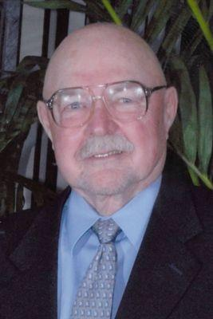

|
Obituary
Guest Book
· "Your
Dad was an amazing man and devoted to his family and..."
- Diane Pearson
View Sign
James
H. Dirlam 90
James H. Dirlam passed away on January 7, 2016. Jim was born in
Bismark, N.D. to Horace and Josephine Dirlam on February 19, 1925. Jim
graduated from Butler University in 1948 and the IU Dental School in 1950.
Jim and Norma (Messmer) Dirlam were married in June, 1948. Jim completed his
Masters in Oral Maxillo Facial Surgery at the University of Pennsylvania in
1957. He completed an oral surgery residency at Grady Memorial Hospital and
Emory University in Atlanta, Georgia. Jim served honorably in the United
States Air Force from 1948 until 1970. He retired from the Air Force with the
rank of Colonel. He moved to Lebanon, Indiana and began a second career as a
Professor of Oral and Maxillofacial Surgery at the IU Dental School in
Indianapolis until he retired in 1990 as Professor Emeritus. Jim was Chairman
of the Undergraduate Division of Oral and Maxillofacial Surgery. Jim was a
frequent recipient of teaching awards from graduating dental classes,
including the Most Favorite Professor Award.
Jim was Board Certified in Oral and Maxillofacial Surgery. He
was a diplomat of the American Board of Oral and Maxillofacial Surgeons, a
Fellow of the American College of Dentists, a Fellow of the American
Association of Oral and Maxillofacial Surgeons, and a member of the American
Dental Association. Jim served as President of the Theta Theta Chapter of the
Omicron Kappa Upsilon Dental Honor Surgery. Jim had many talents and
interests. Jim enjoyed many hobbies including restoring antique cars,
farming, raising sheep, making jewelry, and planted more than 90,000 trees in
Boone County. Jim was an avid fan of IU basketball. Jim and Norma moved to
West Lafayette in 2008 and became members of St. Andrew Methodist Church.
Jim was a devout Christian and dedicated his life to serving his
family, his country, and his profession. Jim was soft-spoken. Jim was a
skilled oral surgeon and teacher who was greatly respected by his students
and colleagues for his knowledge and compassion. He was a loyal, generous,
kind, patient and loving person, especially to the members of his family and
his beloved wife Norma.
Jim is survived by his loving wife of 67 years, Norma Dirlam,
his three daughters, Diana Pennell (husband Stephen), Jane Malavich, and
Gretchen McLaughlin (husband Joel); eight grandchildren: James Pennell (wife
Susan), Lauren Galbraith (husband Steven), Brian Malavich (wife Andrea),
Scott Malavich (wife Lauren), Cameron McLaughlin (wife Claudia), Heather
Doyle (husband Nathan), Colin McLaughlin (wife Natalie), and Connor
McLaughlin. Jim is survived by seventeen great grandchildren. Jim is also
survived by his brother, Jasper Dirlam, and two nephews, John and Mark
Dirlam.
Services will be held Saturday January 16, 2016 at St. Andrew
United Methodist Church, 4703 N. 50 W. in West Lafayette; with visitation at
9:00 am and services beginning at 10:00 am. Graveside services to follow at
Crown Hill Cemetery in Indianapolis starting at 3:00 pm. Memorial
contributions may be made to the IU Dental School, attention of Pamela
Lovejoy, IU Foundation Account Manager, IU School of Dentistry, 1121 W.
Michigan St., Indianapolis, IN 46202. You may sign the guest book and leave
memories at www.soller-baker.com
|
|